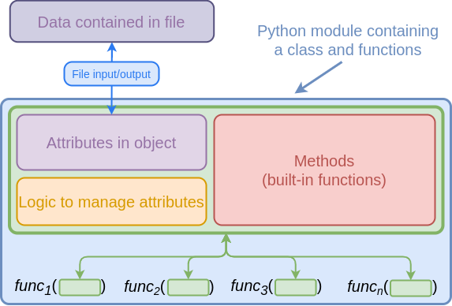
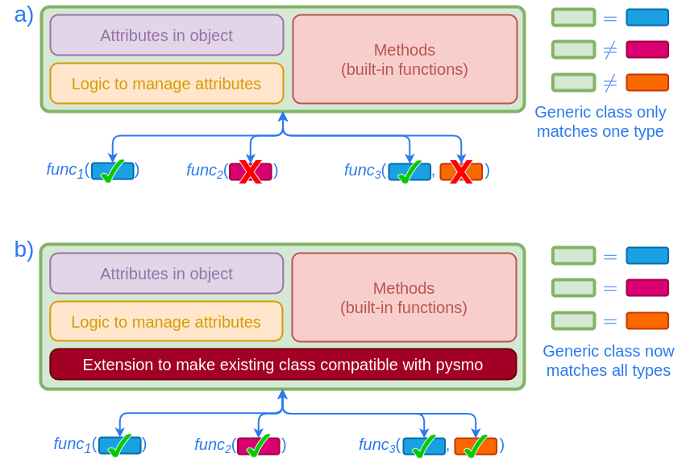

Classes#
The types discussed in the previous chapter are only useful in
conjunction with compatible classes. The pysmo package contains classes that
work with pysmo types (in the pysmo and
pysmo.classes namespaces). Here we discuss how to write your
own classes that work with pysmo types.
Writing compatible classes#
A class is is compatible with a particular type if all attributes and methods
present in the type (defined by the respective protocol class) are also present
in the class itself. For example, a City class may look something like this:
from dataclasses import dataclass
@dataclass
class City:
name: str
founded: int
latitude: float
longitude: float
elevation: float
As the City class has latitude and longitude attributes, an instance of it
is also an instance of the Location type:
This example also illustrates that a class may contain additional attributes and methods that are not part of the type definition. In fact, a class may even match multiple types. Classes may therefore be essentially arbitrarily complex and still work with pysmo types as long as the necessary attributes are present.
Warning
In cases where a class contains additional attributes or methods, we
strongly suggest to never access these in e.g. a function using pysmo
types as input. For example, the code below will run if the city input
is an instance of the City class (because it has the name attribute).
However, the name attribute may not be present in another class that
matches the Location type, resulting in a runtime
error when this function is called.
# Do not do this!
def print_coordinates(city: Location) -> None:
print(f"The coordinates of {city.name} are: {city.latitude}, {city.longitude}")
Pysmo Mini classes#
The City example above illustrates how easy it is to write a class that is
compatible with functions that expect pysmo types as input. However, this is
not necessary if the data do not require a class with attributes that exceed
pysmo types. For such cases the pysmo package includes "Mini" classes that
correspond to each type (e.g. for the Location type there
is a MiniLocation class).
Using pysmo with existing classes#
Recall that pysmo types are aimed at the processing side of things, and not data storage. Consequently, pysmo is not centered around a "native" file format or Python class (and the Mini classes or not meant to be understood as such). The preferred approach is to use existing classes and modify them to work with pysmo instead.
Anatomy of a class#
A typical third party module that reads data from files and uses its own specific class for both data storage and processing will likely look something like this:

Here, the Python class has many responsibilities; it needs to manage file input and output, data consistency (e.g. if changing one attribute means another one also needs to be changed), and process data via methods. The Python module may also contain functions that use instances of the class as inputs.
These kinds of Python classes can be quite sophisticated, and often become the centrepieces of Python packages. As one might imagine, writing and maintaining these classes is a lot of work, and it does not make much sense to create yet another one for pysmo.
Extending an existing class#
In order to make use of these existing classes, we must ensure compatibility with the pysmo types. While some types may work out of the box with an existing class, it is usually necessary to modify the class to work with pysmo types. Crucially, this requires only a fraction of work compared to writing these kinds of classes from scratch.

The SAC classes#
SAC (Seismic
Analysis Code) is a commonly used program that uses its own file format. Pysmo
was initially conceived as a small project to read and write SAC files using
Python. This was done with the SacIO class, which is
still part of the pysmo package. However, it is not compatible with pysmo
types, and is therefore not intended to be used directly anymore. It now serves
as base for the SAC class, which adds a compatibility
layer that enables using pysmo types. We can therefore use the SAC classes as
an example of how to adapt existing third party classes to work with pysmo
types.
Adding attributes to the SacIO class#
The SacIO class allows us to create objects from SAC
files, which we can then access in Python:
from pysmo.lib.io import SacIO
sac = SacIO.from_file("example.sac")
After creating SacIO objects, SAC data and header
fields can be accessed using the same names as used in the SAC file format (in
lowercase). For example for the station location:
>>>
These attributes have the correct format, but not the right name for the pysmo
Location type:
>>>
What is needed is a way to access existing attributes via different names that correspond to the attributes expected by pysmo types. This can be done quite easily by creating a new class which inherits from the original one:
from pysmo.lib.io import SacIO
class SacIO2(SacIO):
@property
def latitude(self) -> float:
if self.stla is None: # (1)!
raise ValueError("SAC Header STLA is not set")
return self.stla
@latitude.setter
def latitude(self, value: float) -> None:
self.stla = value
@property
def longitude(self) -> float:
if self.stlo is None:
raise ValueError("SAC Header STLO is not set")
return self.stlo
@longitude.setter
def longitude(self, value: float) -> None:
self.stlo = value
sac2 = SacIO2.from_file("example.sac")
STLAandSTLOare optional header fields in a SAC file. However, theLocationtype requires thelatitudeandlongitudeattributes to befloats(i.e. they may not be of typeNone).
Objects created from this new class can do everything the
SacIO class can do, while also matching the
Location type. Changing the mapped attributes will also
change the original ones:
>>>
With just a few lines of code we were able to make the
SacIO class (itself over 1000 lines of code) compatible
with the Location type. That said, creating new attributes
directly and mapping them to existing ones may not always be possible for large
classes like SacIO. For example, the event location is
also stored in the headers of a SAC file, but we can't map it to the latitude
and longitude attributes because they are already used for the station
location. A more flexible approach is to map attributes into helper classes,
which themselves are attributes in a new class.
Tip
In case you are asking yourself why you would want to go through this extra step of making a class work with pysmo types instead of writing functions that directly use the original class - consider that the number of functions will almost always be much greater than the number of classes. You may well be using the same class with 200 different functions, and if that class were to change for some reason (or you decide to use a different one entirely), all 200 functions may need to be edited to accomadate the changes. Conversely, extending these classes to work with pysmo types means that in the event the original class changes, only the code that does the extending would need to be edited, while all 200 functions can stay the same.
SAC helper classes#
Because SAC files have a large number of header fields,
SacIO objects have the potential to match several
different pysmo types (or the same type multiple times). For the actual
implementation of the above principle in the SAC class
packaged in pysmo, we therefore use helper classes to provide a clear way to
distinguish between types and avoid mapped attributes clashing with each other.
This is best illustrated with a simple example:
>>> from pysmo import Seismogram, Station
>>> from pysmo.classes import SAC
>>> sac = SAC.from_file("example.sac")
>>> isinstance(sac.seismogram, Seismogram) # (1)!
True
>>> isinstance(sac.station, Station) # (2)!
True
>>>
sac.seismogramis an instance ofSacSeismogramand is therefore compatible with theSeismogramtype.sac.stationis an instance ofSacStationand is therefore compatible with theStationtype.